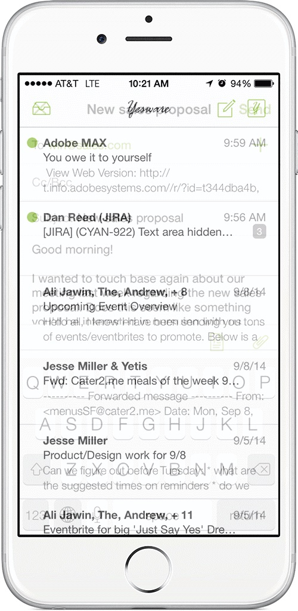

MakingByLaw Studio plans
the form, look and workings of
interaction models between
humans and computers.
PROJECT Matchup
PROBLEM: Sitting at the desk all day means, less activity and movement.
SOLUTION: Matchup initiates activities and competition among co-workers.

- 
This is going to be the Matchup Project
Section 3
How Fab made The Escape from the 9 to 5 and created a passion- based business
Today Fab of beapassionjunkie.com is here to share how she a whole bunch of corporate jobs behind to strike out on her own! Tell us about yourself, what you did pre-escape, and what you do now. I am Fab, and I am a Passion Junkie. I have a background as a freelance journalist (music) and as
How Fab made The Escape from the 9 to 5 and created a passion- based business
Today Fab of beapassionjunkie.com is here to share how she a whole bunch of corporate jobs behind to strike out on her own! Tell us about yourself, what you did pre-escape, and what you do now. I am Fab, and I am a Passion Junkie. I have a background as a freelance journalist (music) and as
How Fab made The Escape from the 9 to 5 and created a passion- based business
Today Fab of beapassionjunkie.com is here to share how she a whole bunch of corporate jobs behind to strike out on her own! Tell us about yourself, what you did pre-escape, and what you do now. I am Fab, and I am a Passion Junkie. I have a background as a freelance journalist (music) and as
Section 4
How Fab made The Escape from the 9 to 5 and created a passion- based business
Today Fab of beapassionjunkie.com is here to share how she a whole bunch of corporate jobs behind to strike out on her own! Tell us about yourself, what you did pre-escape, and what you do now. I am Fab, and I am a Passion Junkie. I have a background as a freelance journalist (music) and as